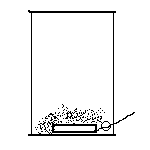
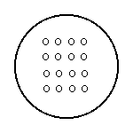
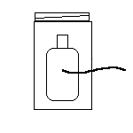
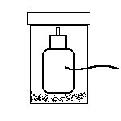

|
A few months back, I ran across an article about a researcher at the government's Sandia Lab (I think Sandia; I've misplaced the article) who has developed a great new flash bang grenade for military and police applications. He was motivated by the fact that the current model - basically a giant firecracker - apparently costs somewhere around one hundred-fifty bucks a... wait for it... pop. Being a steroidal firecracker, the standard model can also be just a little hazardous, as a brilliant FBI agent learned when he accidentally detonated one in his office. So this tame scientist came up with a reusable grenade that's safe even for federal agents. It doesn't generate the same high pressure waves as a conventional flash bang. He described the new, improved grenade as being a can filled with a fuel/air explosive that disperses burning powdered aluminum. He claimed that it could be safely exploded next to a person's face. The report didn't indicate if he was willing to demonstrate that feature personally. And it only costs $50 dollars per use. Your tax dollars at work. Based on the minimal description I remembered from that article, and the knowledge that fuel/air flash bangs are dead easy to make (see The Handy Dandy Improvised Ground Burst Simulator), I decided to see how cheaply I could improvise one of these things. As a matter of fact, I came up with two variants. The first came from testing to see if the article's assertion about the dispersed aluminum powder was true. Take a small tin can, poke a hole in the side at the bottom, thread a firecracker fuse through the hole, and dump a teaspoon or so of powdered aluminum (I used two hundred mesh) on top. Try not to cover the fuse or you'll be disappointed.
 Light the fuse and get back. <insert obligatory boom> Okay, so it works. Let's move up to the fancy reusable model. Remember, we have to keep the cost under fifty bucks to meet the challenge. Here's the materials you need to collect (Sorry, that matter transporter still isn't working right):
For step one, refer back to my earlier article on GBSes. You're going to build one using the small water bottle, tire inflation valve, and the epoxy. When you mount that inflation valve, consider that this assembly must fit inside the peanut butter jar later; you might want nothing more than the threads exposed. Congratulations! You did the hard part. In step two, you're preparing the peanut butter jar to be the external case of the flash bang. Starrt by drilling or punching about sixteen holes in the bottom of the jar. They should be approximately a quarter of an inch in diameter.
 Next, using your miniature fuel/air popper as a guide, figure out where your fuse needs to come through the peanut butter jar, so you can light the fricking thing. Make a hole just large enough to pass the fuse.
 Place one layer of tissue paper (toilet paper works) inside the bottom of the jar to cover the holes. Dump the powdered aluminum on top of the paper. You may want to place another layer of tissue over the aluminum, too, to hold it in place. Stick the water bottle cum fuel/air charge in the jar on top of the aluminum. Fiddle with the fuse to get it extended through the jar. Screw the lid onto the jar. If the bottle charge bounces around too much to suit you, shove some tissue paper aound the bottleneck and try it again. You're done.
 Congratulations; you are now the proud owner of a "Sandia Special". Operation is pretty damn simple, too. Light the fuse and toss it. The fuse ignites the fuel/air mix in the bottle, that resulting little boom touches off the aluminum and blows it out the holes in the jar. Makes a nice little flash. Before you ask; yes, you could use an electrical igniter instead of a fuse. And the jar doesn't have to be peanut butter, nor 40 ounces. Be creative. As for the cost... If you managed to spend more than maybe five dollars on this (and that assumes you bought peanut butter and the rest for the project), Sandia labs has a position for you... Perhaps you noticed that you just built what amounts to a miniature potato cannon with a grid on the muzzle. Potato cannon owners should note this for future reference; you never know when you might want to just shoot bright, safe blanks for the fourth of July.
Did you like this article?

|